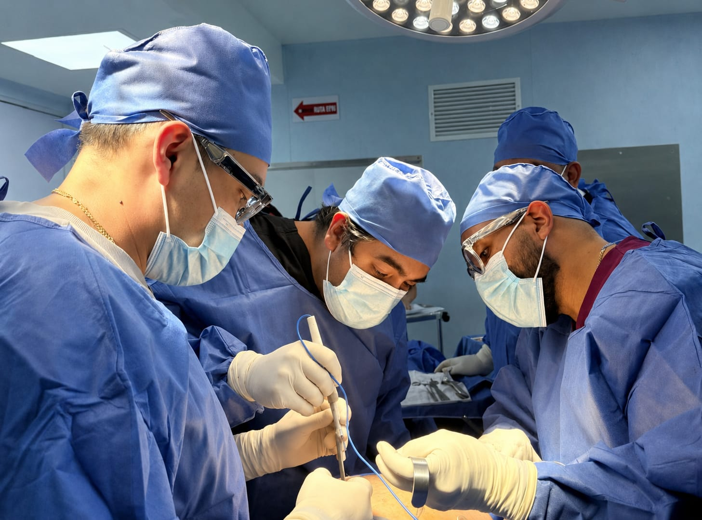
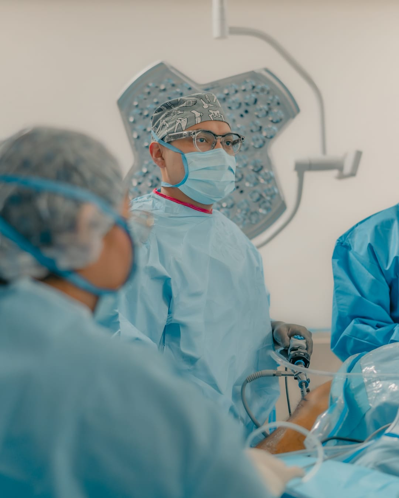
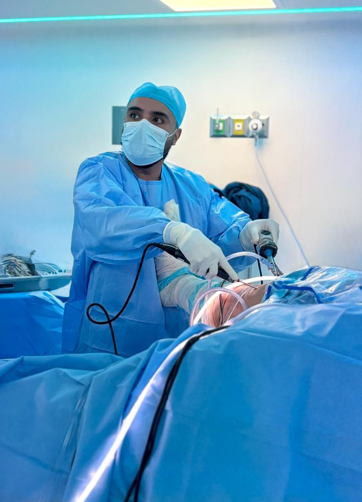
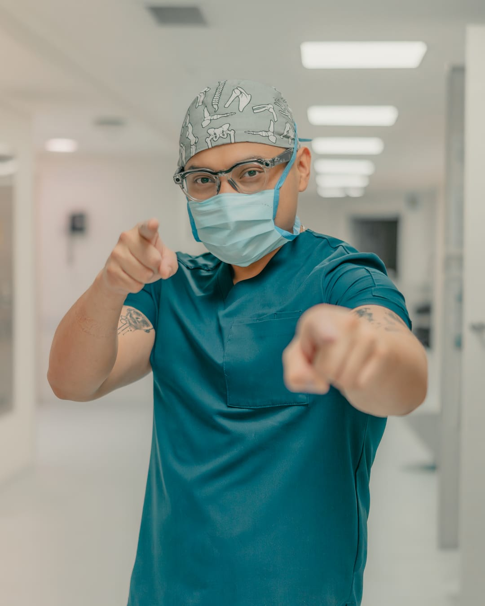
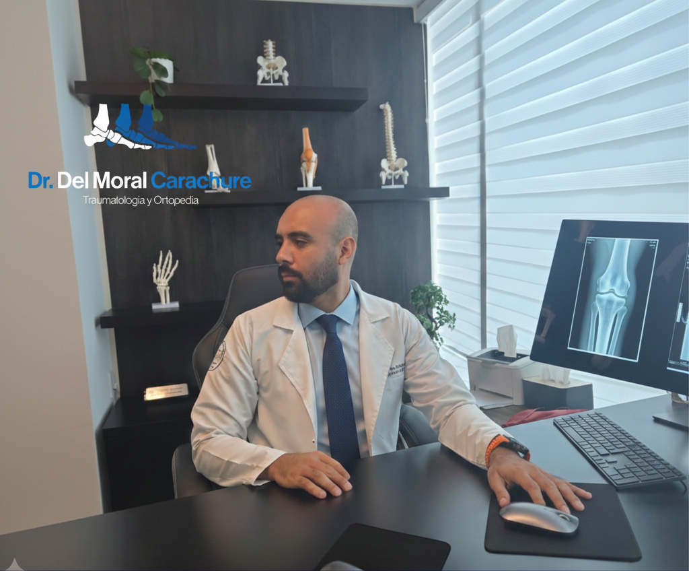
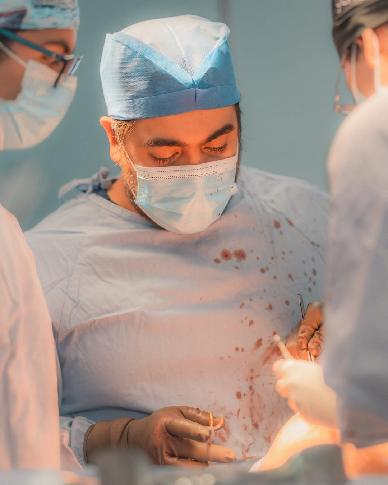
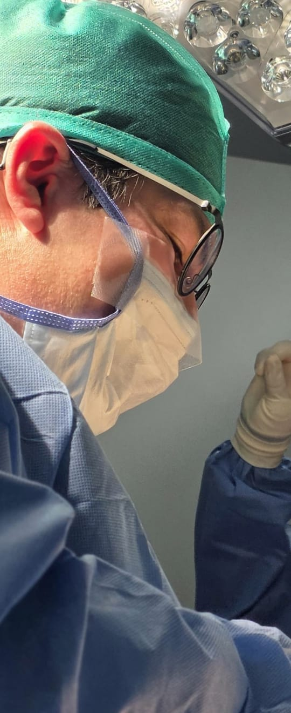
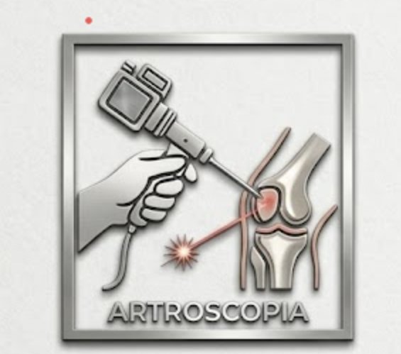
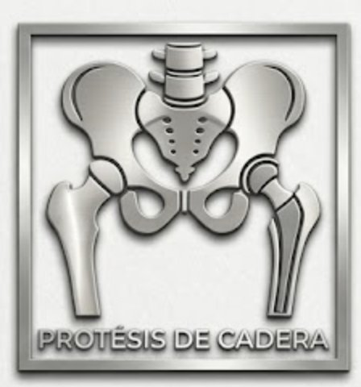
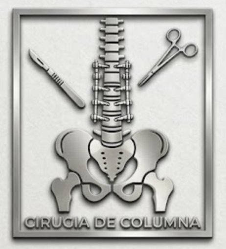

Cuatro especialistas de alto nivel reunidos en un solo centro. Artroscopia avanzada, prótesis articular y cirugía de columna con tecnología de vanguardia.



Cuatro cirujanos con subespecialidades complementarias, formados en las mejores instituciones del país.




Cobertura completa de la patología ortopédica con las técnicas quirúrgicas más avanzadas disponibles en México.



Estamos en uno de los hospitales de mayor nivel en la Ciudad de México, con acceso fácil desde Roma, Condesa, Narvarte y Del Valle.
Aprende sobre procedimientos y lesiones comunes de la mano de nuestros especialistas.
Contenido educativo, casos clínicos y novedades del grupo.
Respuesta en menos de 24 horas · Sin compromisos
Agendar Consulta por WhatsApp